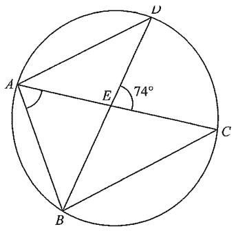

Circle through A,B,C,DChords AC, BDAB = AD (isosceles)AD // BCPoint E (intersection)
2013 MC #19
In the figure, ABCD is a circle. The chords AC and BD intersect at E.
If AB = AD and AD // BC, then $\angle BAE =$
A. $57^\circ$
B. $69^\circ$
C. $74^\circ$
D. $86^\circ$

Figure (original exam diagram)
Step 1 · Name the isosceles angles in △ABD
Since $AB = AD$, triangle $ABD$ is isosceles with vertex $A$.
Let $\angle ABD = a$. Then the base angles are equal:
$$\angle ADB = \angle ABD = a.$$
Base Angles of an Isosceles Triangle\(AB=AC\ \Rightarrow\ \angle ABC=\angle ACB\)\(AB=AD\) makes \(\triangle ABD\) isosceles with vertex \(A\), so \(\angle ADB=\angle ABD=a\).
Step 2 · Use the parallel lines AD // BC
The transversal $BD$ cuts the parallel lines $AD$ and $BC$:
$$\angle CBD = \angle ADB = a \quad(\text{alternate } \angle\text{s, } BC // AD).$$
Step 3 · Angles in the same segment
Both $\angle CAD$ and $\angle CBD$ stand on the chord $CD$:
$$\angle CAD = \angle CBD = a \quad(\angle\text{s in the same segment}).$$
So altogether
$$\angle ABD=\angle ADB=\angle CBD=\angle CAD=a .$$
Angles in the Same Segment\(\angle CAD=\angle CBD\)Both angles stand on the chord \(CD\) of the circle, so \(\angle CAD=\angle CBD=a\).
Step 4 · Exterior angle of △ADE gives a
In triangle $ADE$, the exterior angle at $E$ is the given $74^\circ$:
$$\angle ADE+\angle DAE=\angle CED$$$$a + a = 74^\circ \;\Longrightarrow\; a = 37^\circ .$$
Exterior Angle of a Triangle\(\angle CED=\angle ADE+\angle DAE\)At \(E\) the exterior angle of \(\triangle ADE\) is \(74^\circ=a+a\), so \(a=37^\circ\).
Step 5 · Angle sum of △ABD gives the answer
In triangle $ABD$,
$$\angle ABD+\angle ADB+\angle BAD = 180^\circ $$$$37^\circ + 37^\circ + (\angle BAE + 37^\circ) = 180^\circ $$$$\angle BAE = 180^\circ - 111^\circ = 69^\circ .$$
💡 Key idea: one unknown $a$ captures the whole configuration — isosceles triangle $\Rightarrow$ alternate angles $\Rightarrow$ same segment angles. Then switch to triangle $ADE$ to get $a$ from the exterior angle $74^\circ$.
FINAL ANSWER
$\angle BAE = 69^\circ$ → Option C
PRACTICESimilar question — try it yourself
Question. In the figure, \(ABCD\) is a circle. The chords \(AC\) and \(BD\) intersect at \(E\). If \(AB=AD\), \(AD // BC\) and \(\angle CED=96^\circ\), find \(\angle BAE\).
Show the worked solution
Step 1. Since \(AB=AD\), \(\triangle ABD\) is isosceles with vertex \(A\). Let \(\angle ABD=\angle ADB=a\).
Step 3. \(\angle CAD\) and \(\angle CBD\) stand on the chord \(CD\), so \(\angle CAD=\angle CBD=a\).
Step 4. Exterior angle of \(\triangle ADE\): \(\angle CED=\angle ADE+\angle DAE=a+a=96^\circ\), so \(a=48^\circ\).
Step 5. In \(\triangle ABD\): \(48^\circ+48^\circ+\angle BAD=180^\circ\), so \(\angle BAD=84^\circ\). Then \(\angle BAE=\angle BAD-\angle CAD=84^\circ-48^\circ=36^\circ\).